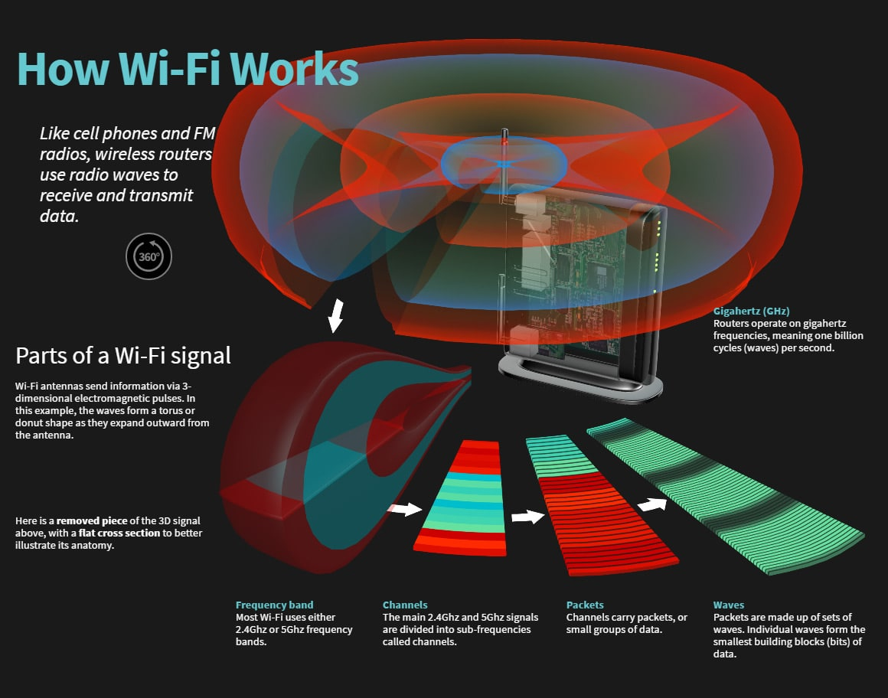
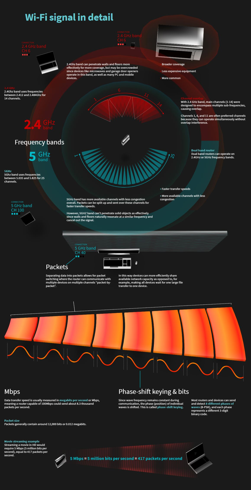
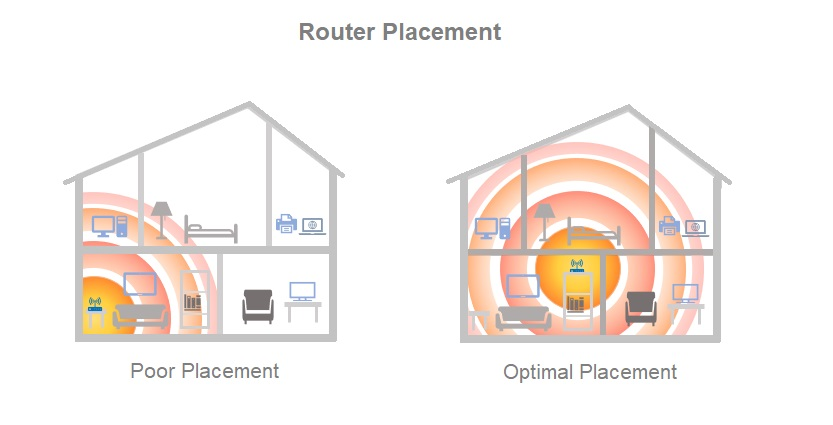
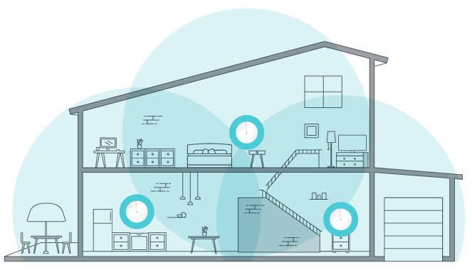

Yes and no. If you only want internet on one device, instead of using a router, you could connect directly to your service providers system device using an ethernet cable. In most cases however, that’s not going to be very useful. To enjoy the internet throughout the home and on multiple devices, a router or other Wi-Fi device is required.
Wi-Fi, from the user's perspective, is just internet access without the use of wires. Wireless-capable devices like a phones, tablets or laptops are able to pick up this wireless signal for use.
A Wi-Fi device is directly connected to an internet connection coming from outside the home or building via ethernet or coax cable. The Wi-Fi device then broadcasts a wireless signal using radio waves that other devices, like laptops, TV’s, and cell phones can connect to.
 Frequency bands are ranges of radio wave frequencies used to transmit data in the wireless spectrum, and can further be broken down into Wi-Fi channels. (The higher the frequency, the faster the data transmission and shorter the signal range.) Wi-Fi frequency bands are frequency ranges within the wireless spectrum that are designated to carry a Wi-Fi signal: 2.4 GHz and 5 GHz frequencies.
The main differences between the 2.4GHz and 5GHz frequencies are speed, or the rate at which the signal travels, and range, the distance the signal travels. A 2.4GHz WiFi signal provides internet to a larger area but sacrifices speed, while the 5GHz band provides faster speeds to a smaller area.
Other differences are channel interference and device compatability. The image above that shows how Wi-Fi works, shows your Wi-Fi frequency being boken down into channels. These channels are what carry the packets of data, or information you are sending or receiving between devices. The 2.4GHz frequency only has 11 channels to carry all the data that your Wi-Fi devices are sending which can lead to interference in how and where the data travels. To you, this means bad connections, slow speads, and buffering. The 5GHz frequency has 45 channels that allow for less overlap which helps reduce interference.
As Wi-Fi has improved, device compatibility has become more of an issue. A lot of the devices that use Wi-Fi were made before the 5Ghz frequency was supported and may only be compatible with the 2.4GHz frequency band. This means that as Wi-Fi signals improve for better speads and reliability, older devices aren't able to take advantage of these improvements.
YES! At the center of traditional Wi-Fi networks is the router or other Wi-Fi device, which is the key piece of equipment that broadcasts the wireless signal. Router technology is changing as rapidly as the devices you connect to them, so what worked fine a year or two ago could now be suppressing your speed and coverage.
The type of router/Wi-Fi device also makes a difference. Older routers only use the 2.4 GHz radio frequency to send and receive data. This can be a problem as other electronics in your home also use that frequency. Microwaves, cordless home phones, wireless headsets, gaming devices, Bluetooth devices, and car alarms are just a few of the products that we use every day that utilize that same 2.4 GHz frequency. These devices cause congestion and can interfere with the Wi-Fi signal that your router sends out causing slow internet speeds and poor or dropped connections. Dual Band Routers use two frequencies to send and receive data: the 2.4 GHz and the 5 GHz bands. Having another frequency helps stop interference from other devices and helps alleviate a congested network.
The size of your home can also determine the effectiveness of your router. A traditional lower end single band router may not be strong enough to provide adequate coverage throughout your home. Higher end routers can send a stronger signal farther, and mesh systems provide multiple access points that can be placed throughout the home for greater coverage.
There are two main types of home Wi-Fi devices. Wireless routers and Mesh Systems.
Wireless routers are a device that broadcast Wi-Fi signals from a single point and should be centralized in the home for best coverage.
Mesh Systems have multiple access points, sometimes referred to as satellites or pucks, that are placed throughout the home to extend your Wi-Fi coverage.
Upload = Send
Download = Receive
In computer networks, download means to receive data from a remote system, typically a server such as a web server, an FTP server, an email server, or other similar systems. This contrasts with uploading, where data is sent to a remote server.
For example, looking at Facebook you are using download. The information you are looking at, you are receiving from Facebook. When you post a comment, upload a picture, or comment on someone else’s post, you are using upload. By hitting “Post”, you are sending that information to Facebook for others to see.
Anytime you use the internet to send information from your device, you are using upload. This could be things like backing up your pictures to cloud storage, using Wi-Fi calling, or sending an email.
When you use the internet to access information from another source, whether an app on your smartphone, YouTube.com, your banking website, etc., you are using download to receive that information.
Internet bandwidth or network bandwidth is the maximum amount of data (measured in Kilobit, Megabit or even Gigabit) that can be transferred per second over a network link. Let’s say your internet package is 50 Mbps download. This means you have a bandwidth of 50Mbps which means 50 megabits of data can be downloaded in one second on your machine.
Everything you do using the internet uses your allotted bandwidth and can be measured in kilobits, megabits, gigabits, which is subtracted from your download and upload rates. Every video on YouTube you watch, every picture you upload to Facebook, every website you look at equals a certain amount of data and uses up the available bandwidth.
When your bandwidth is used up by all the devices connected at one time, your internet has issues; buffered video stream, disconnected internet, page not displayed and will remain this way until usage is reduced.
Yes, there is. Even though you will hear these words used in place of each other, they are different. Internet bandwidth is the maximum amount of data that can pass through a network link at any given time and internet speed is the actual data that passes through. It gets affected by various physical and software-related factors.
For example, if you start downloading a movie from Netflix and the download manager maxes out at 18 Mbps, then in this case, your actual bandwidth is 50 megabits per second, but the speed you’re getting is only 18 megabits per second. So even though you aren’t using your full bandwidth, your speed is limited due to other reasons.